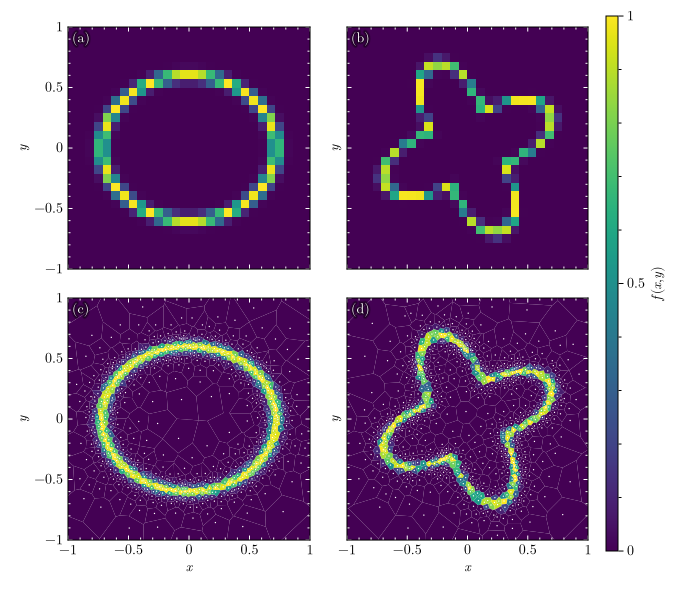

AdaptivePort.jl
Julia port of Python Adaptive: sample a function where it is most informative instead of on a fixed grid. All learners implement the AbstractLearner interface.
Learners
Learner1DandLearner2D(this page): functions on an interval and on a rectangle.LearnerND(page): functions on a box in $N$ dimensions.AverageLearner(page): the mean of a noisy number.AverageLearner1D(page): a noisy function on an interval.IntegratorLearner(page): the integral of a function on an interval.SequenceLearner(page): a plain map over a fixed list of inputs.- Runners evaluate the function for any of them.
Workflow
The learner decides where to sample; you decide how to evaluate the function.
using AdaptivePort
f(x) = sin(8x) + 0.2cos(23x)
learner = Learner1D(f; bounds=(-1, 1))
while !done(learner; tol=0.05) && npoints(learner) < 1000
points = ask(learner, 1)
isempty(points) && break
for x in points
tell!(learner, x, f(x))
end
end
data = result(learner) # (x = sorted Vector, y = values)The full script is examples/learner1d.jl; run it from the repository root with julia --project=. examples/learner1d.jl.
Uniform versus adaptive sampling of three sharp functions with the same number of evaluations (50), from examples/learner1d_plot.jl (run with julia --project=examples):

ask(learner, n)returns up tonnew points. The first points are the bounds; after that each point is the midpoint of the interval with the largest loss. The returned points are marked pending, so further calls never return them again, even before they are evaluated. Passtell_pending=falseto only peek.tell!(learner, x, y)records an evaluation. Points outside the bounds throw anArgumentError; a repeatedxis ignored and the first value is kept.loss(learner)is the largest interval loss, orInfwhile a bound is unevaluated.done(learner; tol)isloss(learner) <= tol.result(learner)returns(x, y)copies sorted byx;npoints(learner)counts them.
Vector-valued functions
Learner1D, Learner2D and LearnerND accept functions with several output components: pass vdim = M to the constructor (default 1, plain numbers). The values are then stored as NTuple{M,T} and tell! takes any iterable of length $M$ (a tuple, a vector, ...); a wrong length throws ArgumentError. vdim is fixed at construction.
f(x) = (sin(3x), tanh(60 * (x - 0.3)))
learner = Learner1D(f; bounds=(-1, 1), vdim=2)
for x in ask(learner, 5)
tell!(learner, x, f(x))
end
result(learner).y # Vector of 2-tuplesAll components share one set of points. The value scale is the largest range over the components (upstream does the same), so a component with a small range does not steer the sampling. Custom losses get tuples: Learner1D calls loss_per_interval(xs, ys) with ys a pair of NTuple{M} of scaled values, Learner2D calls loss_per_triangle(points, values, triangles) with raw NTuple{M} values (and scaled points), as for scalars. The default losses handle tuples. examples/vector.jl runs both learners with vdim = 2.
Runners
A runner does the ask → evaluate → tell! loop for you, using the function stored in the learner (f(x) for Learner1D, f(x, y) for Learner2D): construct a learner, construct a runner, wait, then read the result. Learners decide where to sample; runners decide when and how to evaluate. The manual loop above stays fully supported.
learner = Learner1D(f; bounds=(-1, 1))
runner = BlockingRunner(learner; tol=0.02, max_npoints=500) # returns when done
data = result(learner)
runner = AsyncRunner(learner; tol=0.01) # returns immediately
# ... other work ...
wait(runner)examples/runners.jl shows blocking, asynchronous and parallel runs (julia -t 4 --project=. examples/runners.jl).
- Stopping.
tolstops onceloss(learner) <= tol;max_npointsstops once the learner holds that many points, and batches are cut short so that it is never exceeded. A runner also stops whenaskreturns no points (the learner has reached its numerical resolution), so it cannot spin forever.BlockingRunnerrequires at least one goal; anAsyncRunnerwithout one runs untilcancel!. - Batches. Each iteration asks for
batch_sizepoints (default 1, orThreads.nthreads()withparallel=true), evaluates all of them, then tells all results. Points are requested withtell_pending=false, so the learner never holds pending points that a failed or cancelled batch would leave behind. Smaller batches are more adaptive. - Parallel evaluation.
parallel=trueevaluates the points of a batch in separate tasks (Threads.@spawn). Start Julia with several threads (julia -t auto), and make surefis safe to call concurrently. The learner itself is never touched concurrently: only the runner loop callsaskandtell!, after the whole batch has been evaluated. - Asynchronous execution. The runner loop is an
@asynctask pinned to the caller's thread; evaluations run in spawned tasks. So the learner changes only when the caller yields (sleep,wait, I/O), and readingrunner.learnerfrom the calling task needs no lock. Do not read it from another thread while the runner is running. - Progress.
statusis:running,:finished,:cancelledor:failed; progress isnpoints(runner.learner)andloss(runner.learner). - Errors. If
fthrows, the rest of the batch is still evaluated and its successful results are told; then the runner fails with anEvaluationErrorcarrying the failingpointand the original exception with its backtrace.wait(runner)(andBlockingRunner) rethrows it. - Cancellation.
cancel!stops the runner between batches: the batch in flight finishes and is told first.
Pending points and the shared interface
LearnerND, AverageLearner, AverageLearner1D, IntegratorLearner and SequenceLearner implement the full interface below; Learner1D and Learner2D implement the core part (the AbstractLearner docstring lists both).
pending_points(learner)returns the points handed out byaskand not yet told.remove_unfinished!(learner)forgets them, so thataskcan hand them out again. Use it after abandoned evaluations.loss(learner; real = false)counts pending points as if they were evaluated;real = true(default) uses told data only.AdaptivePort.ask_with_improvements(learner, n)returns upstream's pair(points, loss_improvements);askreturns only the points.- Some learners know when they are finished (the mean is accurate enough, the integral converged, every element is told). They define
done(learner)withouttol(AdaptivePort.has_own_goalistrue), and a runner withouttolstops on that;BlockingRunnerthen needs no other goal.
Refinement algorithm
Each interval between neighbouring evaluated points has a loss, by default the length of the straight segment joining its endpoints, in coordinates scaled by the width of the bounds and the observed range of y. This is upstream's default_loss. Steep regions have long segments and get refined first. The scaled y-range is updated lazily: all losses are recomputed only when the range more than doubles, as upstream does.
ask bisects the highest-loss interval, repeatedly. An interval that already contains pending points is split into sub-intervals that each carry a share of its loss proportional to their width. Ties go to the leftmost interval. Intervals narrower than about eps times the bounds have zero loss and are never split, so ask returns fewer points (eventually none) once the resolution is exhausted. A NaN or infinite interval loss is ranked by the interval's width instead.
Learner2D
using AdaptivePort
f(x, y) = sin(5x) * cos(7y) + 0.3 * exp(-20 * ((x - 0.3)^2 + (y + 0.2)^2))
learner = Learner2D(f; bounds=((-1, 1), (-0.75, 0.75)))
while !done(learner; tol=0.01) && npoints(learner) < 3000
points = ask(learner, 5)
isempty(points) && break
for (x, y) in points
tell!(learner, (x, y), f(x, y))
end
end
data = result(learner) # (points = Vector of (x, y) tuples, values = Vector), in tell order
tris = triangles(learner) # counter-clockwise index triples into data.pointsThe full script is examples/learner2d.jl.
Two thin rings sampled with 784 points on a uniform grid (top) and by Learner2D (bottom, Voronoi cells of the samples), from examples/learner2d_rings.jl (budget = 28^2):

- Points are
NTuple{2}tuples(x, y)everywhere:askreturns them,tell!takes them. bounds = ((xmin, xmax), (ymin, ymax)), finite withxmin < xmax,ymin < ymax; otherwiseArgumentError. Any aspect ratio and coordinate scale works: the learner works in scaled coordinates where the domain is $[-1/2, 1/2]^2$, as upstream.- The first four points are the corners, in the order $(x_0, y_0)$, $(x_0, y_1)$, $(x_1, y_0)$, $(x_1, y_1)$. Their convex hull is the whole rectangle, so once they are evaluated the triangulation covers the domain and no boundary region can be neglected.
tell!(learner, (x, y), z)throws for points outside the bounds. Telling a point again overwrites its value (as upstream;Learner1Dkeeps the first value, also as upstream). A non-finitezis stored but left out of the triangulation.loss(learner)isInfuntil the four corners are evaluated, then the largest triangle loss (below).done(learner; tol)isloss(learner) <= tol.result(learner)returns copies(points, values)in tell order;triangles(learner)returns the Delaunay triangles of the evaluated finite-valued points as index triples intopoints.
Triangulation
The Delaunay triangulation of the (scaled) points is built with DelaunayTriangulation.jl, rebuilt from scratch whenever it is needed (about 15 ms per ask at 1000 points). src/triangulation.jl is the only file that uses the package.
Loss and refinement
The loss of a triangle with area $A$ (in scaled coordinates) is upstream's default_loss, $L = d\sqrt{A} + 0.3A$. Here $d$ estimates the error of linear interpolation on the triangle: with values $v_i$ normalised by their total range and gradients $g_i$ estimated at the vertices, $d = \sum_i \max_j \lvert v_i + g_i \cdot (p_j - p_i) - v_j \rvert$ over the vertices $i, j$. The gradients are a port of scipy's estimate_gradients_2d_global (which upstream uses), checked against scipy to $10^{-14}$. The $d$ term refines curved regions; the $0.3A$ term keeps refining flat ones. Because coordinates and values are normalised, the loss is a relative quantity, invariant under rescaling $x$, $y$ or $f$; tol in done is in these units. It decreases as points are added, though not monotonically: adding a point changes the gradient estimates and the value range.
ask triangulates the evaluated points together with the pending ones (whose values are linearly interpolated from the evaluated data, so they add no deviation but split triangles), ranks the triangles by loss and takes one new point from each of the n worst. In a triangle whose badness $\sqrt{3}\ell^2/(4A)$ ($\ell$ the longest edge) exceeds 5 that point is the midpoint of the longest edge, otherwise the centroid. If too few distinct points come out, the triangulation is rebuilt including them and the step repeats.
Deviations from Python Adaptive
These are intentional for now and may be revisited.
All learners:
askreturns only the points;AdaptivePort.ask_with_improvementsgives upstream's pair.vdimis fixed at construction. Vector values areNTuples, andtell!throwsArgumentErrorfor a value of the wrong length.tell!with a point outside the bounds throws everywhere; upstream stores and ignores it.
Learner1D:
- Non-finite components are excluded from the $y$-range per component; upstream includes
inf. The internalAdaptivePort.update_value!never shrinks the range, as upstream. askbisects; upstream splits one interval intokequal parts when it receives several points.done(learner; tol)exists; upstream expresses goals through runners (loss_goal).- Not yet implemented in
Learner1D: neighbour-based losses (nth_neighbors, curvature) and optimized bulktell_many.
LearnerND (see its page):
- No convex-hull bounds, interpolator, plotting,
anisotropic,triangulation_backendor neighbour-based losses (triangle_loss,curvature_loss_function). - Non-finite values throw
ArgumentError.lossisInfuntil all corners are told. loss(real = false)is implemented (upstream returns the real loss): a simplex with pending points counts as its largest sub-simplex.remove_unfinished!rebuilds the simplex queue; upstream can lose subdivided simplices.- The random start point uses
Xoshiro(1), so it differs from upstream. ask(...; tell_pending = false)snapshots the learner and restores it.- The triangulation supports dimension 1 and builds the initial triangulation by insertion instead of scipy (the same result for points in general position). A failed insertion throws and leaves the triangulation unchanged. Asked points are clamped to the box.
AverageLearner (see its page):
askhands out the smallest seeds that are neither told nor pending; upstream starts at told plus pending and may skip a free low seed.resultis(mean, std, n). Float64 only.
AverageLearner1D (see its page):
- An undersampled $x$ is picked as the smallest such $x$; upstream picks an arbitrary set element.
- Pending bounds are excluded from re-asking; upstream re-asks a pending bound.
- The resample exclusion (
error <= min_errorornsamples >= max_samples) is evaluated on demand, not dropped permanently. max_samplesis not enforced forask(l, n > 1)(upstream neither).- The loss improvement of a resample uses the real neighbour losses.
npointscounts distinct $x$ andnsamplesall samples, so a runner'smax_npointscounts distinct $x$.- No
tell_many_at_point, plotting or dataframes.
IntegratorLearner (see its page):
resultis(integral, error, npoints). Float64 only.ask(...; tell_pending = false)re-queues the asked points (no snapshot);tell!drops told points from the queue.tell_pending!andremove_unfinished!are no-ops, as upstream.DivergentIntegralErrorpropagates unchanged fromtell!andask; upstream converts it inask.askreturns fewer thannpoints when the intervals run out and throws only when it has none.- Kept upstream limitation: if values are told out of order, or asked in batches (as the parallel runner does),
donecan fire with an error estimate well abovetol(upstream issue #96). Example:expon $(0, 1)$,tol = 1e-10, batch size 8 gives an error estimate of $1.4 \cdot 10^{-6}$ at 40 points, identical to upstream. The result is still within its reported error.
SequenceLearner (see its page):
- The index is 1-based.
resultis(indices, values)of the told elements and works before completion; upstream raises until done and returns the values only.value_typekeyword; no dataframes.
Runners:
- One
Runnertype;BlockingRunnerandAsyncRunnerare functions that construct and start it. Execution uses Julia tasks and threads instead ofconcurrent.futuresexecutors; there is noexecutor/ntasksargument, and distributed execution is not supported yet. - Batch-synchronous: a batch is evaluated completely before the next
ask. Upstream refills an executor slot as soon as one point finishes, which keeps workers busier when evaluation times vary. - Goals: only
tol(loss_goal) andmax_npoints(npoints_goal); no customgoalcallable,end_time_goalorduration_goal.max_npointscaps the batch size, so it is never overshot. - Errors: no
retries; the first failure stops the runner with anEvaluationErrorafter telling the batch's successful results. Upstream wraps it in aRuntimeError. cancel!takes effect between batches; upstream cancels the running futures and discards their points.- Learners with their own goal stop without
tol, andBlockingRunneraccepts them without any goal. - No logging, saving,
overhead,elapsed_timeor live plotting.
Learner2D additionally:
- has no persistent point stack (
stack_size): everyaskrecomputes the triangle losses, which equals upstream withstack_size = 1. Upstream's default (10) hands out points chosen from an older triangulation. - may pick a different diagonal for cocircular points (e.g. the four corners), so point sequences differ from upstream after the corners, while the losses reached are comparable.
- ships only
default_loss;uniform_loss,resolution_loss_function,minimize_triangle_surface_lossandthresholded_loss_functionare not ported (pass any(points, values, triangles) -> lossesfunction asloss_per_triangle). - does not provide an interpolator (
ip()) orinterpolated_on_grid. - ignores non-finite values in the triangulation; upstream propagates them into the loss.
API
AdaptivePort — Module
AdaptivePortJulia port of Python Adaptive: adaptive sampling of functions through an ask/tell! interface. Provides Learner1D (interval), Learner2D (rectangle) and LearnerND (box), all with scalar or vector values; AverageLearner and AverageLearner1D for noisy functions; IntegratorLearner (adaptive quadrature); SequenceLearner (a fixed list of inputs); and runners (BlockingRunner, AsyncRunner) that evaluate the function for you.
AdaptivePort.AbstractLearner — Type
AbstractLearnerAdaptive sampler of a function the caller evaluates: the learner proposes points, the caller evaluates them and reports back.
Interface
ask(learner, n; tell_pending = true):Vectorof up tonnew points, never ones already evaluated or pending.tell!(learner, x, y): record the evaluationy = f(x...); returnslearner.tell_pending!(learner, x): markxas issued but not evaluated; returnslearner.loss(learner): largest remaining loss,Infuntil the learner covers its domain.npoints(learner): number of evaluated points.result(learner): copies of the evaluated data as a named tuple.- field
f: the function, called by runners asf(x...)on a pointxfromask.
Interface (Stage 5; implemented by LearnerND, AverageLearner, AverageLearner1D, IntegratorLearner, SequenceLearner)
pending_points(learner):Vectorof the points issued but not yet told.remove_unfinished!(learner): forget all pending points; returnslearner.loss(learner; real = true):real = falsealso counts the pending points as if they were evaluated.AdaptivePort.ask_with_improvements(learner, n; tell_pending = true):(points, loss_improvements), upstream's return value ofask. Defining it givesaskfor free.
Interface (optional)
done(learner; tol): defaults toloss(learner) <= tol.AdaptivePort.has_own_goal(learner):trueifdone(learner)withouttolis meaningful (the learner knows when it is finished); defaultfalse. Runners then stop ondone(learner)when notolis given.
AdaptivePort.Learner1D — Type
Learner1D{T, V, F, L}Adaptive sampler of a scalar or vector-valued function on the interval bounds, driven by ask and tell!.
The value type V is T for scalar output (vdim = 1) and NTuple{vdim, T} for vector output. Vector values are scaled by one common y-scale, the largest per-component range, as upstream. Non-finite components are ignored when tracking the range.
Fields: f (stored for future runners, never called), bounds, loss_per_interval, dx_eps (smallest splittable interval width, 2 * max(abs.(bounds)) * eps(T) as upstream), xs/ys (evaluated points), losses (cached loss per interval), pending (points handed out by ask but not yet told), yrange (min and max of the finite told ys, per component for vector output) and yscale (the y-range at the last full recomputation of losses).
Invariants:
xsis strictly increasing,length(ys) == length(xs).length(losses) == max(0, length(xs) - 1),losses[i]is the loss of the interval(xs[i], xs[i+1]), evaluated with the y-range current when it was last computed (as upstream, losses of untouched intervals are not refreshed until the range more than doubles); it iszero(T)if the width is belowdx_eps.maximum(yrange[2] .- yrange[1]) <= 2 * yscaleonce two finite distinctysexist: as upstream, all losses are recomputed only when the y-range more than doubles, so thattell!stays O(1) in loss evaluations.pendingis strictly increasing and disjoint fromxs.- All
xsandpendinglie insidebounds.
Construct with Learner1D(f; bounds).
See Also
ask,tell!,loss,default_loss
AdaptivePort.Learner2D — Type
Learner2D{T, V, F, L}Adaptive sampler of a scalar or vector-valued function on the rectangle bounds = ((xmin, xmax), (ymin, ymax)), driven by ask and tell!.
Value type V is T for scalar output and NTuple{M, T} for vector output with M = vdim > 1. Fields: f (stored for future runners, never called), bounds, loss_per_triangle, points/values (evaluations in tell order), index (point → position in points) and pending (points handed out by ask but not yet told).
Invariants:
length(values) == length(points),index[points[i]] == i,pointsare distinct.pendingis disjoint frompoints.- All
pointsandpendinglie inside the closed rectanglebounds.
The learner works in scaled coordinates (p - center) / (xmax - xmin, ymax - ymin), which map the domain to [-1/2, 1/2]^2, as upstream. Triangulations are rebuilt from scratch when needed, nothing geometric is cached.
Construct with Learner2D(f; bounds).
See Also
AdaptivePort.ask — Function
ask(learner, n; tell_pending = true)Propose up to n new points to evaluate, as a Vector.
Unevaluated and non-pending bounds come first (ascending). The rest is greedy bisection: the interval of xs, pending and chosen bounds with the highest priority is split at its midpoint, repeatedly. Pending points inside an evaluated interval take a proportional share of its loss, as upstream. Fewer than n points (possibly none) are returned once every interval is narrower than dx_eps.
Deviation from upstream (provisional): upstream returns (points, loss_improvements) and subdivides one interval into equal parts; this returns the points only.
Arguments
learner: theLearner1D.n: number of points to request,n >= 0.
Keyword Arguments
tell_pending: register the returned points viatell_pending!. Defaulttrue, so that repeated calls never return the same point twice.
Returns
- The proposed points; bounds first, then in the order chosen.
See Also
ask(learner::Learner2D, n; tell_pending = true)Propose up to n new points (x, y) to evaluate, as a Vector.
Corners that are neither evaluated nor pending come first. The rest follows upstream's _fill_stack: triangulate the evaluated points together with the pending and already chosen points (whose values are linearly interpolated from the evaluated data, or zero while a corner is unevaluated), rank the triangles by loss_per_triangle, and take one point from each of the highest-loss triangles (see choose_point_in_triangle). If that yields too few points, the triangulation is rebuilt with the new points and the step repeats. Candidates that coincide with a known point are skipped; fewer than n points (possibly none) are returned when no new candidate exists.
Deviation from upstream: no persistent point stack (stack_size); every call recomputes, and only the points are returned, not their loss improvements.
Arguments
learner: theLearner2D.n: number of points to request,n >= 0.
Keyword Arguments
tell_pending: register the returned points viatell_pending!. Defaulttrue, so that repeated calls never return the same point twice.
AdaptivePort.tell! — Function
tell!(learner, x, y)Record the evaluation y = f(x) and update the cached interval losses.
For vector output (vdim > 1) y is any iterable of length vdim; other lengths throw ArgumentError. Throws ArgumentError if x is outside the bounds (deviation: upstream stores but ignores such points). A repeated x is silently ignored and the first value is kept, as upstream; use update_value! internally to overwrite.
See Also
tell!(learner::Learner2D, (x, y), z)Record the evaluation z = f(x, y); for vector output (vdim = M > 1) z is any iterable of length M, otherwise ArgumentError.
Throws ArgumentError if (x, y) is outside the bounds (deviation: upstream stores but ignores such points). Telling an evaluated point again overwrites its value, as upstream. Non-finite z (any non-finite component) is stored but left out of the triangulation.
tell!(learner::LearnerND, x, y)Record the evaluation y = f(x...) at the point x (a tuple or vector of N coordinates); returns learner.
y is a number, or for vdim = M > 1 any iterable of M numbers. Throws ArgumentError if x is outside the bounds (deviation: upstream stores but ignores such points), if y has the wrong length, or if y is not finite (deviation: upstream does not check). Telling an evaluated point again is ignored, as upstream. The triangulation and the losses of the affected simplices are updated incrementally.
tell!(learner::AverageLearner1D, (seed, x), y)Record the sample y = f(seed, x). A new x is inserted into the inner learner with y as its mean; a new seed at a known x updates the mean and error there; a known (seed, x) is ignored. Throws ArgumentError for x outside the bounds.
See Also
tell!(learner::IntegratorLearner, x, y)Record y = f(x) for a point x returned by ask, in any order. Intervals whose values are complete update the integral and error estimate. A non-finite y is allowed.
Throws
ArgumentErrorifxwas not issued by the learner.DivergentIntegralErrorif the integral appears to diverge.
Returns
learner.
tell!(learner::SequenceLearner, point, value)Store value for point = (index, element); only the index is used. Telling an index again overwrites its value.
AdaptivePort.tell_pending! — Function
tell_pending!(learner, x)Mark x as issued but not yet evaluated, so ask does not hand it out again.
Throws ArgumentError if x is outside the bounds; a point that is already evaluated or pending is ignored.
See Also
tell_pending!(learner::LearnerND, x)Mark the point x as issued but not evaluated; returns learner. If a triangulation exists, x subdivides the simplices that contain it in sub-triangulations that share the loss of the parent simplex by volume, so later ask calls avoid its neighbourhood.
Throws ArgumentError if x is outside the bounds (deviation: upstream ignores such points). Points that are already evaluated are ignored.
tell_pending!(learner::IntegratorLearner, x)Does nothing, as upstream: the learner tracks the points it hands out itself. Returns learner.
AdaptivePort.loss — Function
loss(learner)Current loss of learner: the largest interval priority, or Inf while a bound is not yet evaluated.
Intervals whose loss is NaN or infinite are ranked by their width instead, like upstream.
See Also
loss(learner::LearnerND; real = true)Largest simplex loss, Inf until the box corners are evaluated and a triangulation exists (deviation: upstream returns the loss of the first triangulation, however incomplete).
With real = false pending points count: the loss of a simplex that is subdivided by pending points is replaced by that of its largest part. Upstream's loss(real = False) is not implemented and returns the same as real = true.
loss(learner::AverageLearner; real = true)Standard error of the mean in units of the tolerance (see AverageLearner). With real = false the pending samples count towards the sample size.
loss(learner::AverageLearner1D; real = true)Loss of the means as for Learner1D; Inf until both bounds are told. With real = false pending points count as split points of their interval, as upstream, and an interval next to a pending point without a told neighbor has loss Inf.
loss(learner::IntegratorLearner; real = true)Distance of the error estimate from the target, abs(abs(integral) * tol - error) as upstream. The pending points play no role, so real has no effect.
loss(learner::SequenceLearner; real = true)Fraction of elements not told yet; with real = false, pending elements count as told.
AdaptivePort.done — Function
done(learner; tol)Whether loss(learner) <= tol. Learners with their own stopping criterion (AverageLearner, IntegratorLearner, SequenceLearner) also accept done(learner) without tol.
Keyword Arguments
tol: loss tolerance; required for other learners because the loss scale depends on the loss function.
See Also
done(learner::AverageLearner; tol = nothing)Whether loss(learner) <= tol; without tol, whether the mean is within its tolerance (loss(learner) <= 1).
done(learner::IntegratorLearner; tol = nothing)Whether the integral is determined. Without tol this is upstream's criterion: the error estimate is zero or below tol * abs(integral) (the tol of the learner), or the part of the error that does not come from removed intervals (those too narrow to split or at machine accuracy) is, or no interval is left. With tol, loss(learner) <= tol as for other learners.
done(learner::SequenceLearner; tol = nothing)Whether loss(learner) <= tol; without tol, whether every element is told.
AdaptivePort.result — Function
result(learner)Evaluated data of learner as a named tuple (x, y) of sorted copies; y holds tuples for vector output.
See Also
result(learner::Learner2D)Evaluated data as a named tuple (points, values) of copies in tell order: points[i] is an (x, y) tuple and values[i] its function value. triangles indexes into points.
result(learner::LearnerND)Evaluated data as a named tuple (points, values) of copies in tell order: points[i] is an NTuple{N} and values[i] its function value (a number, or an NTuple{M} for vdim = M > 1). simplices indexes into points.
result(learner::AverageLearner)Named tuple (mean, std, n): the sample mean, the corrected sample standard deviation (Inf below min_npoints samples) and the number of samples. mean is NaN without samples.
result(learner::AverageLearner1D)Evaluated data as a named tuple of vectors sorted by x: x, y (the means), error (half-width of the confidence interval of the mean, Inf for one sample) and nsamples (samples at each x).
result(learner::IntegratorLearner)Current estimate as a named tuple (integral, error, npoints): the integral over bounds, an estimate of its absolute error (Inf until the first interval is complete), and the number of told points.
result(learner::SequenceLearner)Named tuple (indices, values) of the told elements in index order. Works before the sequence is complete, where upstream raises; once it is complete, values are the function values in the order of sequence.
AdaptivePort.npoints — Function
npoints(learner::AverageLearner1D)Number of distinct x with at least one sample; nsamples counts all samples. A runner's max_npoints counts this.
npoints(learner::IntegratorLearner)Number of evaluated (told) points.
AdaptivePort.default_loss — Function
default_loss(xs, ys)Loss of one interval: the length hypot(x2 - x1, y2 - y1) of the segment joining its endpoints, as upstream default_loss.
For vector values (a tuple of two NTuples) it is the maximum over the components of hypot(dx, abs(dy_i)), as upstream; a NaN component makes the loss NaN.
The learner passes scaled coordinates, x / (b - a) and y / yscale, so the loss is invariant under rescaling x or y. Measuring the graph's arc length makes steep regions dominate, while flat regions are still refined through the x term. A loss of the form dx * (1 + abs(dy)) was tried first and rejected: for small dx the dy term vanishes and the sampling becomes uniform.
Arguments
xs: the two scaled interval endpoints.ys: the two scaled function values; for vector output twoNTuples, scaled by the common y-scale.
Returns
- The interval loss, same type as the inputs.
See Also
default_loss(points, values, triangles)Per-triangle loss dev * sqrt(A) + 0.3 * A of upstream's 2D default_loss: A is the triangle area and dev the deviations estimate of the linear interpolation error.
The dev term refines where the function curves; the area term keeps refining flat regions so that no part of the domain is neglected. points are scaled to the unit square by the learner, so the loss is invariant under rescaling x, y or the values.
Arguments
points: scaled vertex coordinates,NTuple{2}each.values: function values atpoints,Vector{T}or, for vector output,Vector{NTuple{M, T}}(losses are then summed over components, with values normalised by the largest component range, as upstream).triangles: counter-clockwise index triples intopoints.
Returns
Vectorof losses, one per triangle.
See Also
AdaptivePort.triangles — Function
triangles(learner::Learner2D)Delaunay triangles of the evaluated points with finite values, as counter-clockwise index triples into result(learner).points.
The triangulation is computed in scaled coordinates (as the learner sees it), so it can differ from a Delaunay triangulation of the raw points when the domain is not square. Once the four corners are evaluated it covers the whole rectangle. Empty while fewer than three non-collinear points exist.
See Also
AdaptivePort.Runner — Type
Runner{L<:AbstractLearner}Drives a learner: repeatedly asks it for a batch of points, evaluates the learner's function learner.f on them as f(x...) (f(x) in 1D, f(x, y) in 2D) and tells the results back. Created by AsyncRunner or BlockingRunner; it starts on construction.
Fields: learner (inspect progress with npoints(runner.learner) and loss(runner.learner)), cancelled (set by cancel!) and task (the Task running the loop).
Type Parameters
L<:AbstractLearner: the learner type; the runner uses only theAbstractLearnerinterface.
See Also
AdaptivePort.BlockingRunner — Function
BlockingRunner(learner; tol = nothing, max_npoints = nothing, batch_size, parallel = false)Same as AsyncRunner, but return only once the runner has stopped. Rethrows an EvaluationError. At least one of tol and max_npoints is required, as upstream refuses to block forever, unless the learner has its own stopping criterion (AverageLearner, IntegratorLearner, SequenceLearner).
Returns
- The finished
Runner.
AdaptivePort.AsyncRunner — Function
AsyncRunner(learner; tol = nothing, max_npoints = nothing, batch_size = parallel ? Threads.nthreads() : 1, parallel = false)Start learning learner.f in the background and return the Runner immediately.
Each iteration asks for batch_size points with tell_pending = false, evaluates them, and tells every successful result back. The loop stops when loss(learner) <= tol (without tol: when done(learner), for learners with their own stopping criterion), when npoints(learner) >= max_npoints, when ask returns no points (the learner is resolved to its numerical limit), after cancel!, or when an evaluation throws.
The loop runs in a task pinned to the caller's thread (@async), and the function evaluations run in tasks spawned on other threads. So the learner is only mutated on the caller's thread, at the caller's yield points (sleep, wait, I/O), and reading runner.learner from the calling task is safe without locks. Reading it from another thread is not.
Keyword Arguments
tol: stop onceloss(learner) <= tol(upstreamloss_goal).nothingdisables it.max_npoints: stop once the learner holds this many points (upstreamnpoints_goal); no batch exceeds it, so it is a hard limit on evaluations.nothingdisables it. With neither goal the runner runs untilcancel!or untilaskreturns nothing.batch_size: points requested per iteration.1is the most adaptive; larger batches only pay off withparallel.parallel: evaluate the points of a batch concurrently, one task each (Threads.@spawn). Start Julia with several threads (julia -t auto), andlearner.fmust be safe to call concurrently.
Returns
- A running
Runner.wait(runner)blocks until it stops and rethrows a failure.
Errors
- If
learner.fthrows, the other points of that batch are still evaluated and told, then the runner fails with anEvaluationErrorholding the failed point. Nothing is left pending in the learner. No retries.
See Also
AdaptivePort.EvaluationError — Type
EvaluationError{P} <: ExceptionThrown by a runner when the learner's function throws at point.
Fields: point::P (the input that failed) and exception::CapturedException (the original exception with the backtrace from inside the function).
See Also
AdaptivePort.status — Function
status(runner)The runner's state: :running, :finished (goal reached or nothing left to ask), :cancelled or :failed.
There is no "created" state, because runners start on construction, as upstream.
AdaptivePort.cancel! — Function
cancel!(runner)Ask runner to stop. Takes effect between batches: the batch being evaluated finishes and is told to the learner first, so the learner is never left with unevaluated pending points. wait(runner) returns once it has stopped.
Returns
runner.
Base.wait — Method
wait(runner::Runner)Block until runner stops. Rethrows the exception that stopped it (an EvaluationError for a failed evaluation), unwrapped from Julia's TaskFailedException.
Returns
runner.
AdaptivePort.pending_points — Function
pending_points(learner)Points handed out by ask (or registered with tell_pending!) and not yet told, as a new Vector.
See Also
AdaptivePort.remove_unfinished! — Function
remove_unfinished!(learner)Forget all pending points, so that ask may hand them out again (upstream remove_unfinished). Use it after evaluations were abandoned. Returns learner.
See Also
Internals
AdaptivePort.deviations — Function
deviations(points, values, triangles)Per-triangle estimate of the linear interpolation error, as upstream deviations: with values normalised by their range and gradients g from estimate_gradients, dev = sum_i max_j abs(v_i + g_i ⋅ (p_j - p_i) - v_j) over the vertices i, j of the triangle. For vector values (Vector{NTuple{M, T}}) all components are normalised by the largest component range, gradients are estimated per component and the deviations are summed over components.
AdaptivePort.estimate_gradients — Function
estimate_gradients(points, values, triangles; tol = 1e-6, maxiter = 400)Gradient of the data at every point, a port of scipy's estimate_gradients_2d_global (used by upstream through CloughTocher2DInterpolator).
The gradients minimise the curvature of the piecewise-cubic Clough–Tocher interpolant along the triangulation edges (G. M. Nielson, Math. Comp. 40, 253 (1983); R. J. Renka & A. K. Cline, Rocky Mountain J. Math. 14, 223 (1984)), solved by Gauss–Seidel iteration until the largest relative change is below tol. Points without neighbours get a zero gradient.
AdaptivePort.choose_point_in_triangle — Function
choose_point_in_triangle(a, b, c; max_badness = 5)New sample point in the triangle (a, b, c): the midpoint of its longest edge if the triangle is skinny, otherwise its centroid (upstream choose_point_in_triangle).
Badness is sqrt(3) / 4 * longest_edge^2 / area, 1 for an equilateral triangle; max_badness = 5 is upstream's value. Splitting the longest edge of skinny triangles keeps the triangulation from accumulating slivers.
AdaptivePort.delaunay — Function
delaunay(points)Delaunay triangulation of the distinct 2D points (a Vector of NTuple{2}), as a DelaunayTriangulation.Triangulation.
Insertion order is randomised with a fixed seed (fast point location, deterministic result).
AdaptivePort.delaunay_triangles — Function
delaunay_triangles(points)Counter-clockwise index triples of the non-degenerate Delaunay triangles of points, each rotated to start at its smallest index and sorted, so the result is deterministic. Empty for fewer than three points.
DelaunayTriangulation.jl returns one zero-area triangle for collinear input; such triangles are dropped.
AdaptivePort.signed_area — Function
signed_area(a, b, c)Signed area of the triangle (a, b, c), positive if counter-clockwise.
AdaptivePort.interpolate_linear — Function
interpolate_linear(tri, values, q)Piecewise-linear interpolant at q of values (one per point of the triangulation tri); NaN outside the convex hull.
AdaptivePort.ask_with_improvements — Function
ask_with_improvements(learner, n; tell_pending = true)Upstream's ask: up to n new points together with the expected loss improvement of each, as (points::Vector, improvements::Vector). The public ask returns only the points. Unexported.
AdaptivePort.has_own_goal — Function
has_own_goal(learner)Whether learner defines done(learner) without a tolerance; false unless a learner opts in. Unexported.
AdaptivePort.update_value! — Function
update_value!(learner, x, y)Overwrite the value at the already evaluated point x and update the neighbouring losses.
Unexported; used by AverageLearner1D to move a mean. Throws ArgumentError if x is not evaluated. Values are converted as in tell!. As upstream (whose AverageLearner1D only calls _update_scale, which widens), the y-range never shrinks, so an overwritten extreme keeps counting; all losses are recomputed only when the range more than doubles.
See Also